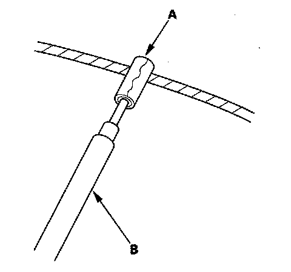
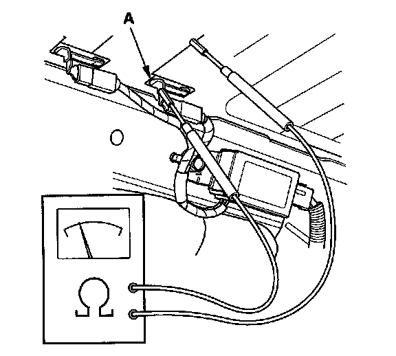
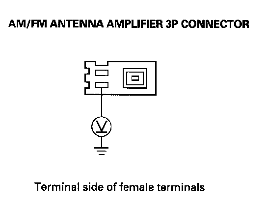
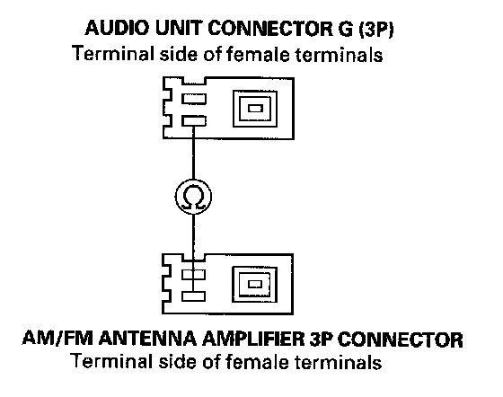
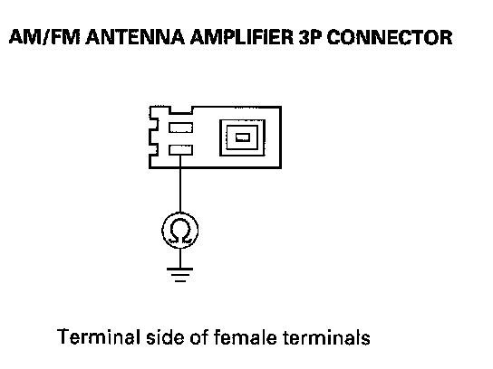
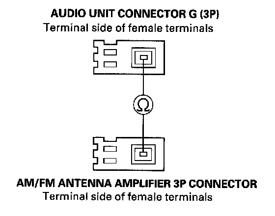
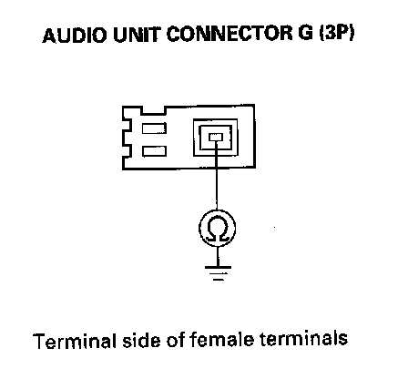
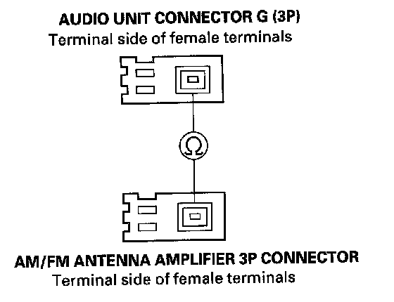
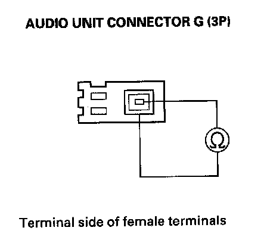

Poor AM or FM Radio Reception or Interference (Without Navigation)
Poor AM or FM radio reception or interference (without navigation)NOTE: Check the radio reception in an open area. Compare it to a known-good vehicle whenever possible. Poor reception/interference can be caused by the following:
- The radio station is far away.
- Atmospheric conditions are unfavorable.
- Tall buildings, mountains, or high-voltage power lines are nearby.
- Aftermarket window tinting or electronic accessories.
1. Do the seek stop test.
Is the test vehicle within 10 % of the known-good vehicle?
YES - Multipath interference or weak station. Operation is normal.
NO - Go to step 2.
2. Check if the radio reception/interference is the same in several locations.
Is the reception/interference the same?
YES - Go to step 3.
NO - Multipath interference or weak station. Operation is normal.
3. Check the reception/interference while the engine is running.
Is there noise (static or whine) only with the engine running?
YES - Check the antenna and radio grounds. If OK, check the charging system and the ignition system.
NO - Go to step 4.

4. Wrap aluminum foil (A) around the tip of a tester probe (B) as shown.

5. Touch one tester probe to the rear window antenna terminal (A), and move the other tester probe along the antenna wires to check for continuity. Repair if there is no continuity.
6. Remove the audio unit. Check that the antenna lead is properly connected.
Is it connected properly?
YES - Go to step 7.
NO - Reconnect the connector, and recheck the function.
7. Disconnect the antenna cable 3P connector from the AM/FM antenna amplifier.

8. Measure the voltage between the AM/FM antenna lead connector No.3 terminal at the AM/FM antenna amplifier and body ground.
Is there battery voltage?
YES - Go to step 12.
NO - Go to step 9.
9. Remove the audio unit.

10. Check for continuity between audio unit connector G (3P) No.3 terminal and the AM/FM antenna amplifier 3P connector No.3 terminal.
Is there continuity?
YES - Go to step 11.
NO - Repair open in the wire between the audio unit and the AM/FM antenna amplifier.

11. Check for continuity between the AM/FM antenna amplifier connector (3P) No.3 terminal and body ground.
Is there continuity?
YES - Repair short in the wire between the audio unit and the AM/FM antenna amplifier.
NO - Substitute a known-good audio unit, and recheck.
12. Remove the audio unit.

13. Check for continuity between audio unit connector G (3P) No.1 terminal and the AM/FM antenna amplifier 3P connector No.1 terminal.
Is there continuity?
YES - Go to step 14.
NO - Replace the antenna lead and/or sublead.

14. Check for continuity between audio unit connector G (3P) No.1 terminal and body ground.
Is there continuity?
YES - Replace the antenna lead and/or sublead.
NO - Go to step 15.

15. Check for continuity between audio unit connector G (3P) No.2 terminal and the AM/FM antenna amplifier 3P connector No.2 terminal.
Is there continuity?
YES - Replace the antenna lead and/or sublead.
NO - Go to step 16.

16. Check for continuity between audio unit connector G (3P) No.1 and No.2 terminals.
Is there continuity?
YES - Replace the antenna lead and/or sublead.
NO - Replace the AM/FM antenna amplifier, and recheck. If the reception is still poor, replace the audio unit.